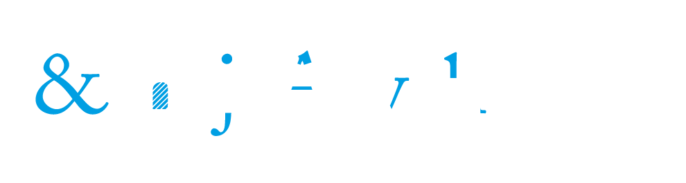
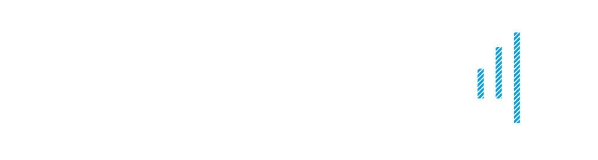

Datos del estudiante
Identificación
Análisis visual · Capas tipográficas superpuestas




Tipografía · 2026 · UTP · Mg Mario Quiroz
Semana 1 · Bloque C — Vocabulario tipográfico fundamental: asta, remate, palo seco, ascendentes, descendentes, línea de base, altura de x y contrapunzón.
Datos del estudiante
Análisis visual · Capas tipográficas superpuestas



